Partnerships
The eMOLT Program could not exist without the support of collaborators around the region. We also partner on other scientific initiatives to streamline at sea data collection for fishermen and promote environmental data standardization throughout the region. Click the links below to learn more and feel free to reach out with ideas for other partnerships.
Partner Organizations

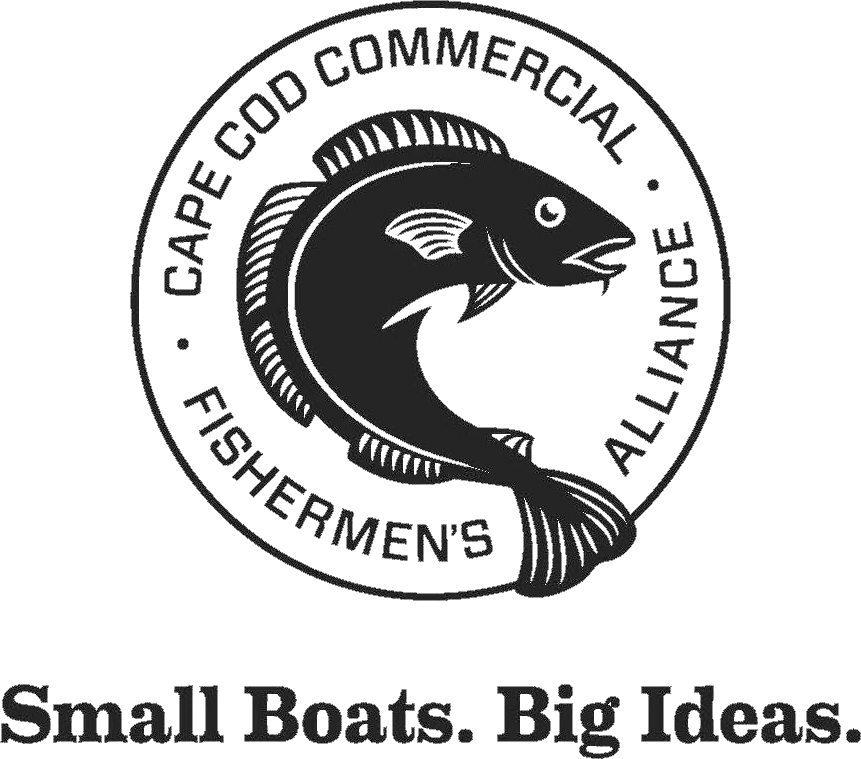
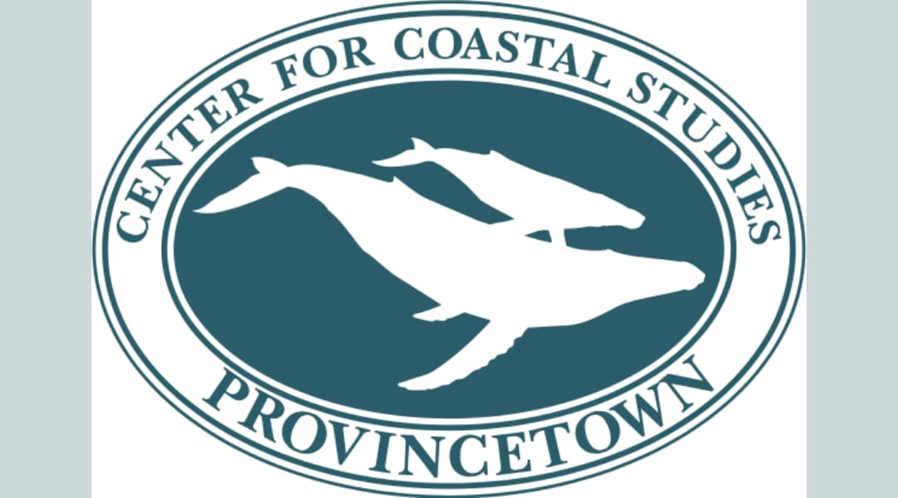
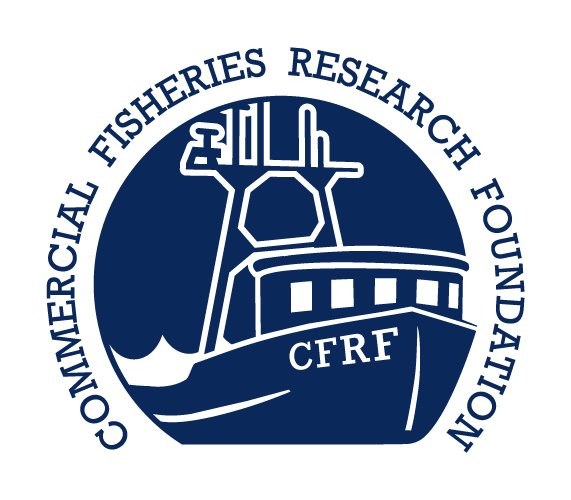
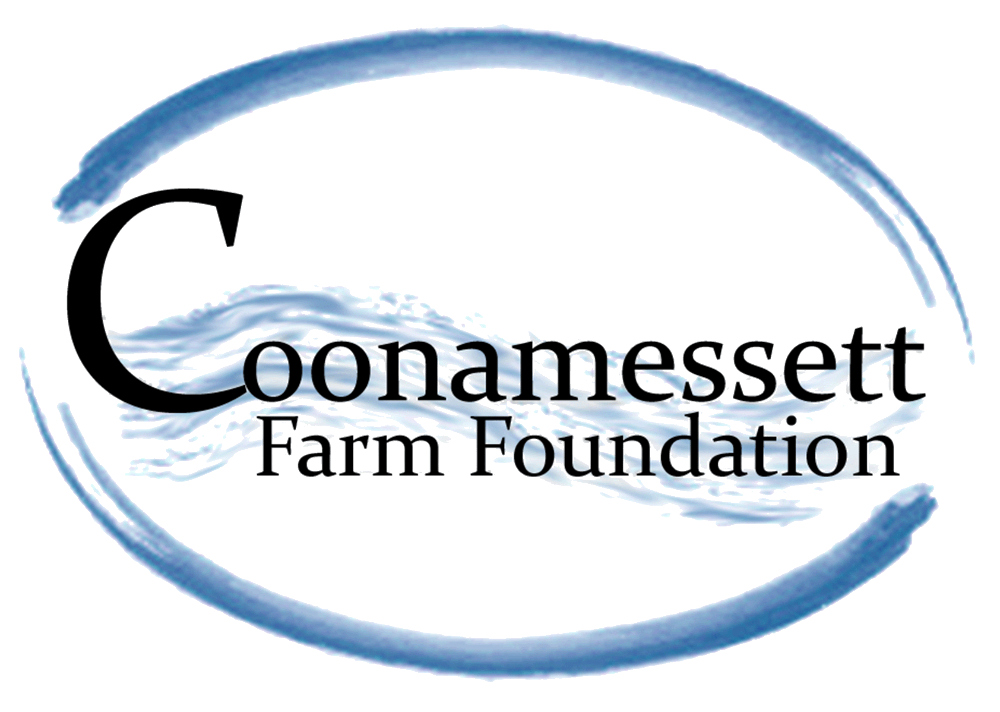
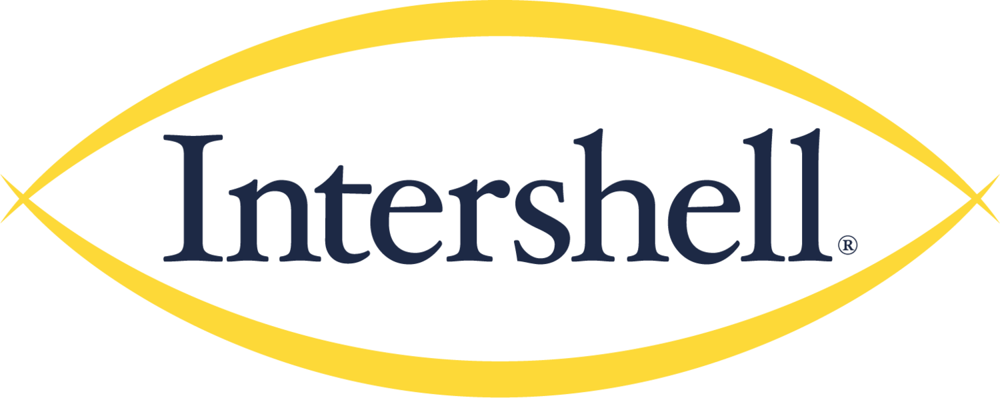
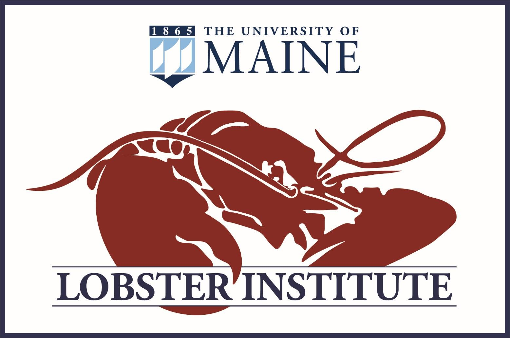
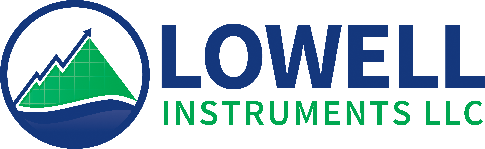
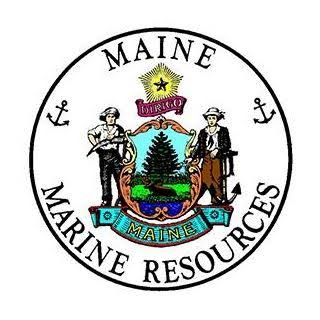
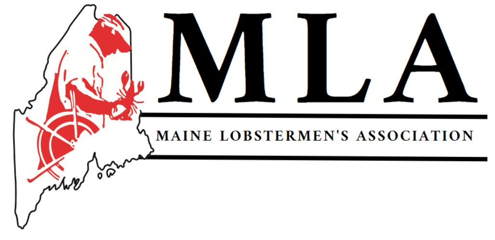
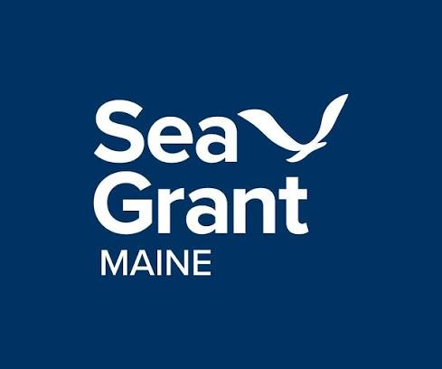
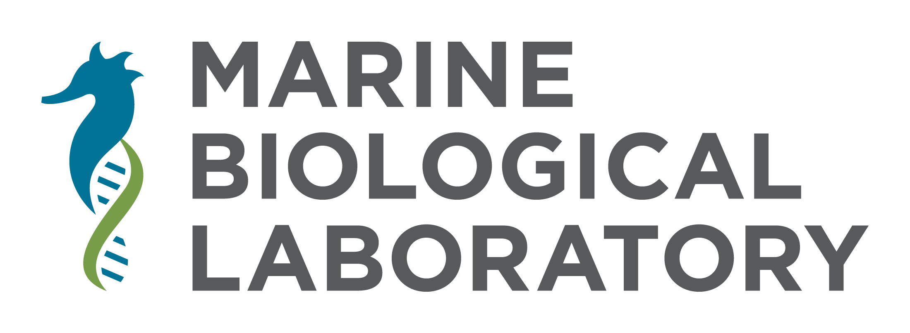
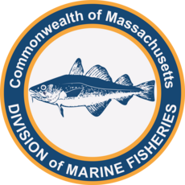
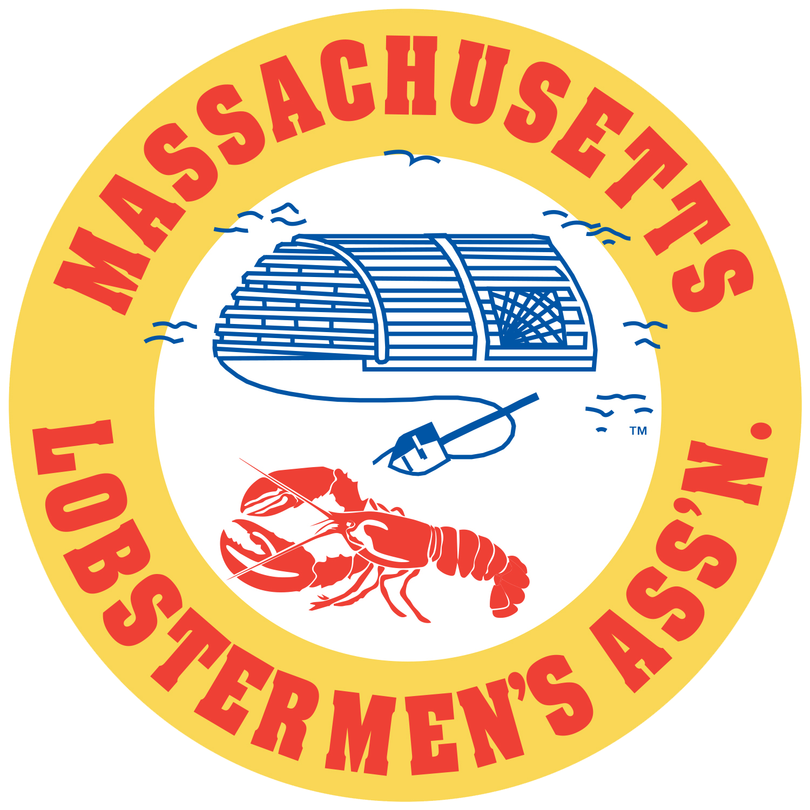
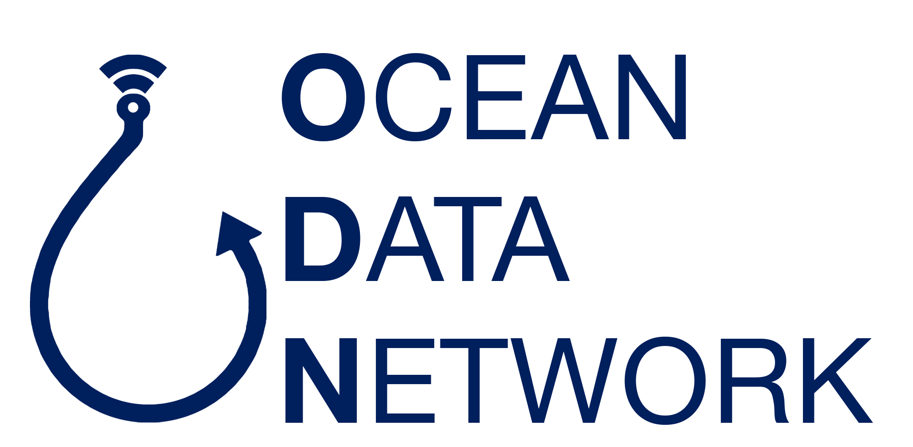
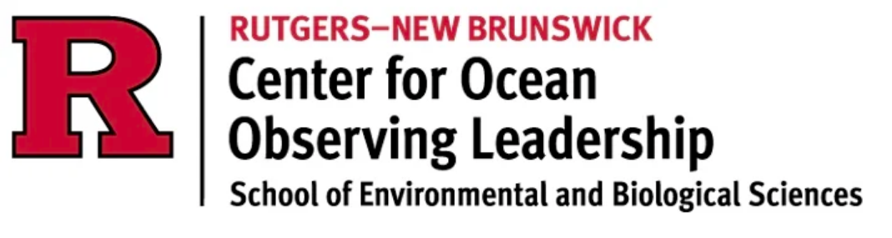
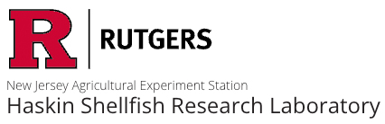
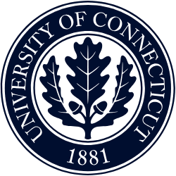
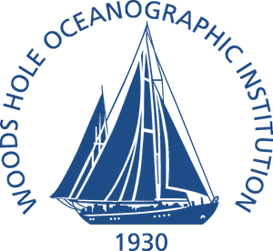
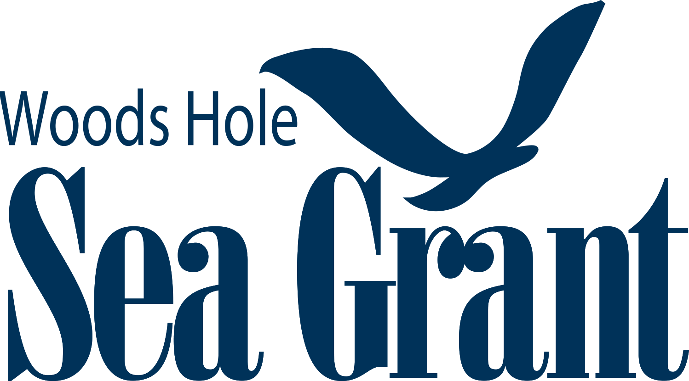